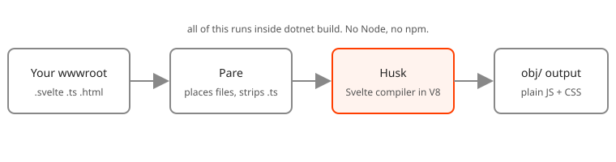

Husk in plain words
Everything you need to use Husk, without the internals.
What happens when you build
- MSBuild finds your
.svelte,.svelte.tsand.htmlfiles underwwwroot. - Husk starts a small JavaScript engine (V8) inside the build and loads the Svelte compiler into it.
- Each component is compiled to an ES module, a source map and some CSS. Plain
.tsfiles are stripped of their types. - The results are written under
obj/, with a content hash in the name (whenHuskHashNamesis on, the default outside Debug), and served as static web assets at the path of the source file. - Your
index.htmlgets an import map that tells the browser wheresvelteand your modules are.
That is all. The browser runs the output as it is: no bundle, and no Husk code at run time.

What happens when you save
With builder.AddHusk() in Development, the running app watches your files. A saved component is compiled again in the same process, the engine is already warm, and dotnet watch reloads the page. If the save has an error, it is logged and the browser keeps the last good version.
Outside the Development environment, AddHusk() does nothing. The compiled files were already made by the build.
Words you will meet
| Word | What it means here |
|---|---|
| Component | A .svelte file. |
| Rune module | A .svelte.ts or .svelte.js file that uses $state and friends outside a component. |
| Import map | A block in your HTML that maps svelte and ./App.svelte to real URLs. Husk fills it in. |
| Marker | The empty <script type="importmap" data-husk> in your page. |
| Pare | The other half. It decides where compiled files go, serves and publishes them, and strips TypeScript. |
| Static web asset | An ASP.NET Core feature: files served from obj/ as if they sat in wwwroot. |
Pare, the part you should know
Husk is built on Pare, a TypeScript stripper and build for .NET. You never call it, but three things follow from it:
- You reference
Extrode.Pare.Buildyourself, withPrivateAssets="all". NuGet imports build targets only for direct references. Without it the build stops withHUSK002. - TypeScript is stripped, not checked. Types are erased and nothing complains about a type error. Run
tsc --noEmitin your editor or CI if you want checking. Some syntax cannot be erased (anenum); in a.svelte.tsthe build reports it asHUSK100with aPARE1xxmessage, and in a component Svelte reports it. - There is no bundling or minifying. Pare does neither, and Husk does not add them.
Questions
Does it need Node anywhere? No. Not to build, not to run, not in CI.
Is the output the same as Vite's? The compiler output is the same as Node running Svelte 5.57.3, checked byte for byte. What differs is that there is no bundle: modules load one by one.
Why does the first restore download about 83 MB? Husk depends on V8 for Windows, macOS and Linux on x64 and arm64 (Microsoft's packages, 77 MB, shared across Husk versions); Husk itself is 6 MB. It is restored once per machine and is not part of your published app.
Can I use it on Alpine? You cannot build there (HUSK001). The published app runs anywhere, so build on Debian or in a glibc container.
Which browsers? The output is tested in Chrome, Firefox and Safari.
Does it do SvelteKit? No. Routing and server rendering are not part of Husk yet.
Where do I report a problem? On GitHub; there is a bug template. For security, use private vulnerability reporting.